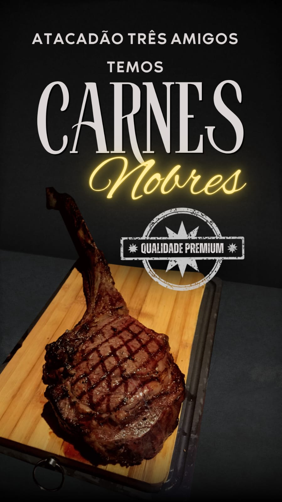
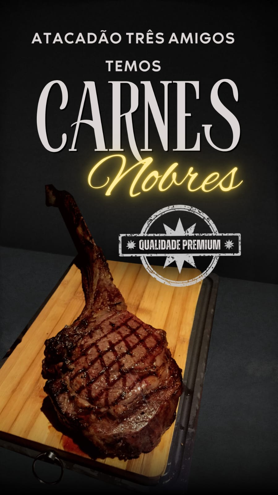

Sobre o projeto
Projeto Atacadão Três Amigos busca trazer disponibilidade e o conforto para os clientes que buscam o melhor preço e variedades de produtos. Atacadão Três Amigos, vai ficar localizado na região urbana de Mirante do Paranapanema, para atender Mirante e região, com o intuito de dar mais visibilidade para região. Atua no Mercado como varejo atacadista, focado em vendas em grande escala.
Produtos ou Serviços Oferecidos: Alimentos, bebidas, produtos de limpeza, higiene pessoal, e itens para uso doméstico e industrial. Serviços de entrega também podem ser incluídos.
Clientes: Pequenos e médios varejistas, comerciantes, restaurantes e consumidores que buscam comprar em maior quantidade.
Concorrentes: Outros atacadistas como Assaí, Atacadão, além de supermercados.
Fornecedores: Distribuidores e fabricantes de produtos alimentícios e de consumo, com foco em negociações para garantir preços competitivos.
No Pontal do Paranapanema, falta acesso a produtos variados, preços competitivos e serviços de apoio logístico, prejudicando comerciantes e consumidores locais.
Nossa proposta é Estabelecer um centro de distribuição do Atacadão na região, visando proporcionar acesso a produtos variados a preços competitivos, além de oferecer apoio logístico para comerciantes e consumidores.
Como Será?
O Atacadão oferecerá alimentos, bebidas, produtos de limpeza, higiene pessoal e itens domésticos, além de serviços logísticos como entrega e apoio ao reabastecimento, visando atender pequenos comerciantes e consumidores com qualidade e preços acessíveis.
Os clientes do Atacadão ganharão preços competitivos, variedade de produtos, qualidade, conveniência com entrega e apoio ao comércio local, melhorando sua experiência de compra.
Com economia em preços, variedade de produtos, qualidade garantida, conveniência na entrega e apoio ao comércio local, melhorando a experiência de compra.
Principais informações
Área total 24.200 m². Para maior conhecimento sobre, convidaremos especialista na área para apresentação do nosso projeto. Esse que trás uma grande probabilidade de emprego para moradores da região, tendo uma expectativa de que dentro de uns 2 anos é de expandir para cidades da região.
Promoção

 
